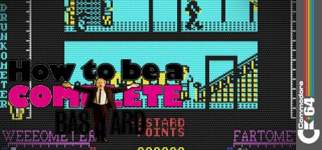

How To Be A Complete Bastard
1987
•
C64
•
Virgin Games
Overview
Game Summary
How To Be A Complete Bastard on Commodore — screenshots, manual, downloads and video.
Explore
More Details
View the full interactive game page
Browse all games